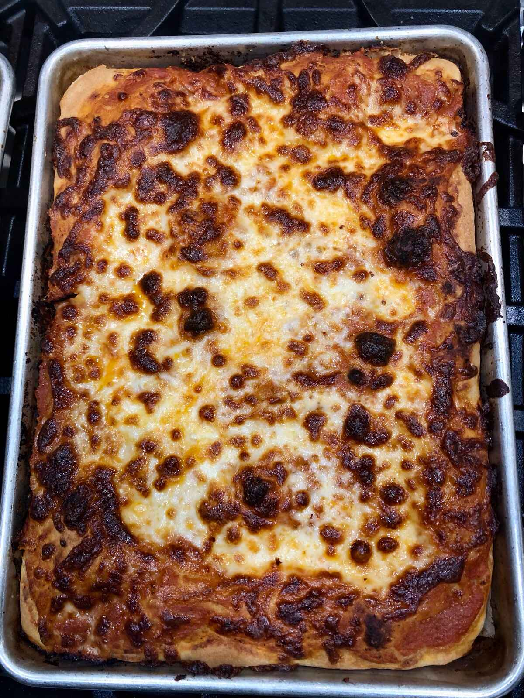
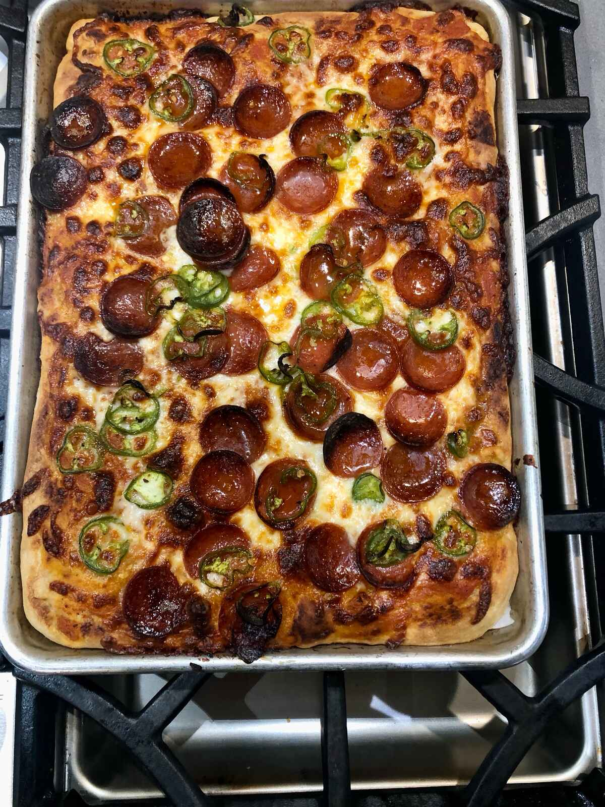
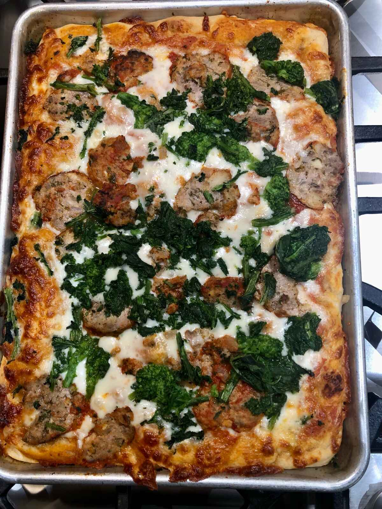

That was a hell of a vacation, but I made some Pizza
I guess in my last post I ended it with a very prescient “I need a fucking vacation.” And here we are in the year of our lard twenty-goddamn-twenty-three, a full six hundred and five days later (and yes, I know that the Associated Press and various other style guides are all “numbers under 10 or something you should use the numbers rather than spelling them out” but like whatever. I didn’t get a degree in journalism because I wanted to listen to someone tell me how I could fucking write. Oh. Shit. Well. Anyway.) and I’m finally back from my “vacation”.
Lets see where does nearly 2 years (take that AP) get us? My kids? They’re still picky as shit. My cat is still a chubby little orange lump. No one really appreciates my humor still, and my mom thinks I swear too much. So, really, we haven’t moved step one. Not only that but I’m blogging about motherfucking pizza again. ITS LIKE NO TIME HAS PASSED AT ALL.
But you didn’t come here to listen to my cringe story about being super fucking depressed or going to Hawai’i or eating my weight in bagels and pizza in NYC last year. Hopefully you didn’t come here for my award-avoiding photography, because, fuck you, my dad took these photos. You came here to listen to me complain about my children and how to make pizza dough.
So as you might be able to tell by looking at a calender or going outside or, I dunno, not being a total basement dweller that it’s winter in the Northern Hemisphere, which happens to be where I live. Also winter here in Seattle means a dumb amount of rain. (Maybe.) This makes it super difficult to use that nice outdoor super hot pizza oven during these times so I have to resort to more, well, basic methods of making pizza. This means that you need to make different style of pizzas since without an oven that goes to 800º you’re not gonna get the char you’re looking for on a Neopolitan pizza. Hell even with a pizza stone you’re not gonna really get the thermal mass like you would on a deck oven in a standard pizza joint if you want to cook more than a single pizza well.
This really gives you two decent options for making more than one pizza are relegated in my mind to pan pizza and Sicilian or grandma-style pies.

I think I’ve covered the pan pizza here before (I really can’t even be fucked to search my own blog, so I guess my attitude hasn’t changed much either), so I’m gonna talk about grandma style pies. Conveniently they’re also the kind of pies I made a week ago when my dad was out here visiting.
Oh god. I know what you’re fucking thinking right. Your smooth fucking brain is looking at that picture up there of that pizza. And it’s saying “that’s not round, how could it be a pie?”
ALL FUCKING PIZZAS ARE COOKED IN PIES. THE SHAPE IS IRRELEVANT.

You might be asking what a grandma style pizza is? Basically it’s a pizza that is rectangular in shape cooked on a sheet pan. You might see it called Sicilian as well. (Technically the grandma pie should have the cheese under the sauce like some sort of fucking bastard half-child of a Chicago-style deep dish pizza, but holy fuck are you fucking kidding me Chicago?) The dough itself is foccacia-esque, so that means it’s very high hydration.
This dough was 82% water (so that means 82% of the weight of the flour in water) and then 5% salt and yeast each, 3% sugar and 8% olive oil. I think each pizza used about 300g of dough? IDK I’m not a fucking mathematician I’m a computer programmer.
ANYWAY you want to let it rise in bulk until it’s twice the size and then you want to divide it onto the sheetpans (I used quarter sheet pans so I could make more variety) and really grease the ever living fuck out of them. I mean pretend like you’re doing John Revolta’s hair in that musical he was in with the girl from Australia? What was the name of that? Oil? Lard? I dunno. You like add some oil. And when you’re done add some more. Then add twice as much and when you think you’ve added enough add some more. NO NOT THAT MUCH YOU’LL FUCKING RUIN IT. WHAT ARE YOU AN OLIVE FARMER? HOW COULD YOU USE THAT MUCH FUCKING OIL. Then roll the dough in it the oil and cover loosely. It won’t rise inasmuch as it will spread out. It’ll also be REAL fucking sticky so like you might want to oil your hands or something. I dunno do you have enough oil?

An hour before you want to cook, get your oven to a reasonable 475º and let it heat for an hour. Top those fuckers and put them in for like 20 minutes, rotating and moving them as necessary to make sure they cook evenly. Let them cook for a few minutes and then slide the pizza off the pan. This will work if you used enough oil. If you didn’t they’ll stick like that fucking swear of jam your daughter left on the table and didn’t tell anyone and like four days later you’re resting your elbow on the table and then you go to move and it rips your flesh off as its permanently bonded to the goddamn jam and the table. Next time use more oil. Or like some parchment paper. I’m not your fucking boss.